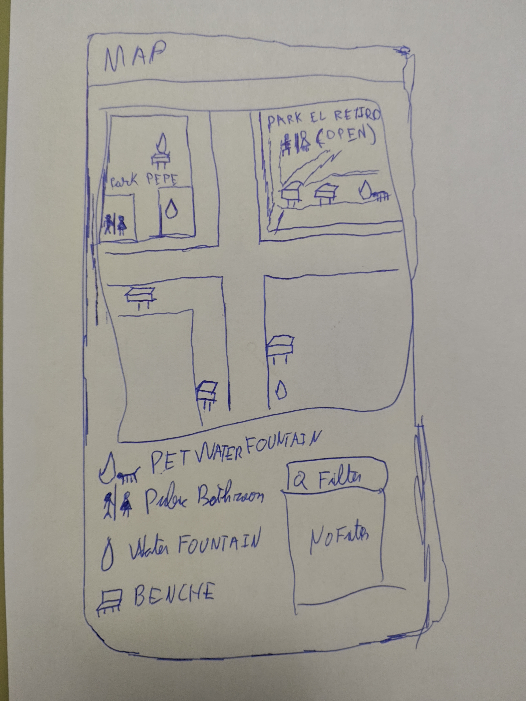

Madrid Rest Places
General Description
Madrid Rest Places is a web application that helps people find places
to take a break in Madrid. It displays parks, benches, public toilets,
drinking fountains, and facilities for pets on an interactive map.
Specific Requirements
-
Display each facility on an interactive map using its available
geographic coordinates.
-
Allow users to filter facilities by type, such as parks, benches,
toilets, drinking fountains, or pet facilities.
-
Let users select a map marker to view the facility's name,
location, type, and any other available details.
-
Allow users to find facilities near a selected location and view
their approximate distance from it.
-
Show opening hours or availability only where the underlying data
provides that information.
-
If a review feature is implemented, allow users to rate facilities
and read ratings and reviews submitted by others.
User Interface Mock-ups
The following sketches illustrate the planned main views of the
application.
Main View: Map and Filters
The main view shows facility markers on a map alongside controls for
filtering by facility type and finding nearby places.
